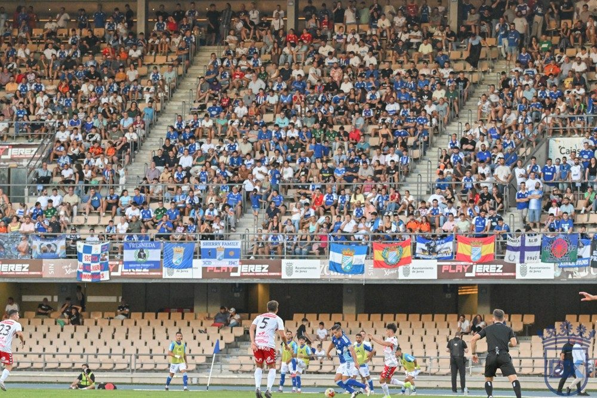

Ganar o ganar

Foto: Diario XerecistaEl Xerez CD recibe hoy al Marbella (19:00, Chapín) sin margen de error. Los resultados del sábado han dejado la tabla más apretada y, ante un rival directo con los mismos 6 puntos, solo vale la victoria. Es la hora de que la mejoría que se ha visto en el juego se traduzca por fin en goles.
Lo que dejó el sábado
La jornada empezó ayer con cuatro partidos, y casi todo se movió por arriba. El Recreativo goleó 5-0 al Antoniano y se pone líder con 17 puntos. El Betis Deportivo empató en Mijas y el Ciudad de Lucena, que ganó en Chapín hace una semana, también sumó solo un punto en Estepona. Don Benito y Linares firmaron tablas.
El Xerez, 13.º en puesto de play-out, está a 8 puntos de Don Benito y Badajoz, que con 14 ocupan ahora las últimas plazas de play off. La distancia todavía se puede recortar, pero no admite más tropiezos en casa.
Un partido que vale doble
Enfrente está un Marbella empatado a 6 puntos. Una victoria llevaría al Xerez a 9 puntos y dejaría atrás a un rival directo. Una derrota, en cambio, podría hundirlo en la zona de descenso, porque por debajo también juegan Atlético Central y Tamaraceite.
Que la mejoría se vea en el marcador
El equipo de Abel Segovia ha dado pasos adelante en el juego, y el propio técnico asegura que genera más ocasiones que la media. Pero el Xerez lleva solo cuatro goles en siete jornadas, la segunda cifra más baja del grupo. Ante el Lucena hizo un buen partido y perdió 0-1. Hoy no basta con merecer: hay que marcar y ganar para empezar a mirar hacia la parte alta.
🇬🇧 Read in English ← Volver a la portada